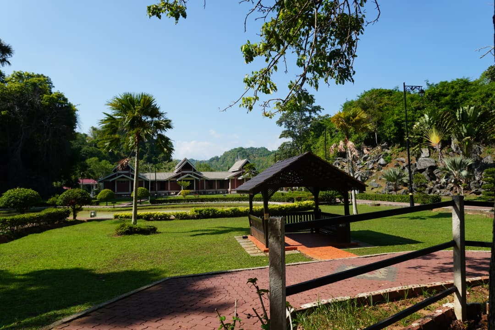

Muzium Kota Kayang
Discover the rich history and heritage of Perlis.
Mr. Syed Ridzuan Bin Syed Mohammad
Assistant Director of Muzium Kota Kayang

About the Museum
Muzium Kota Kayang, located in Perlis, Malaysia, is an important heritage institution that preserves and showcases the rich history and cultural identity of the state.
The museum exhibits various collections including traditional artifacts, archaeological findings, and royal heritage items that reflect the development of local society.
It also serves as a center for education, research, and cultural preservation.
📍 Location:Kuala Perlis, Perlis
Projects & Contributions
Projects and heritage activities involving the Assistant Director of Muzium Kota Kayang.
